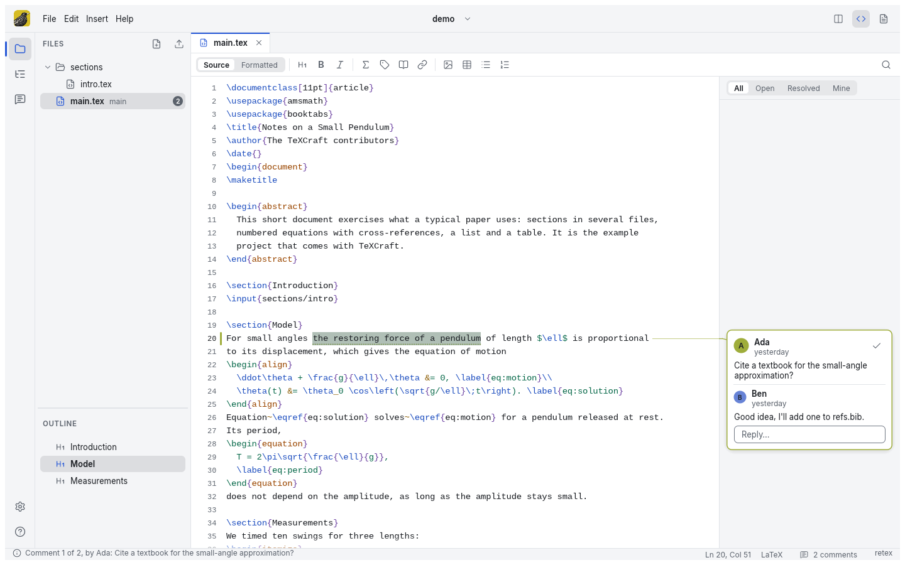

Comments and suggestions
Discuss a passage with a comment, or propose a change without making it. Both are kept in the project, so they travel with it through its history and through GitLab or GitHub.
Your name
Comments and suggestions carry a name. Set yours in Settings › Review before your first one. TeXCraft also makes a key on your computer that tells your comments from those of someone else with the same name; others see a short form of it.
Comments

- To comment, select some text and choose Edit › Comment (Ctrl+Alt+M), or Add a Comment in the text's right-click menu. In Vim mode,
:commentcomments on the Visual selection. - A thread sits in the margin beside its passage, with Reply… and Resolve. A resolved thread can be reopened. You can edit or delete what you wrote; the thread's menu has Delete Thread.
- The Review section of the side panel lists every thread, filtered by All, Open, Resolved or Mine. Edit › Next Comment (F8) and Previous Comment (Shift+F8) go from one to the next.
- Comments follow their passage as the text is edited. When a passage changes beyond recognition or is deleted, its thread says so.
- The margin can be hidden with its Hide button; the Review section still lists the comments. When the editor is too narrow for the margin, the comments are shown in the Review section.
Suggested changes
In Suggest mode, what you type is proposed instead of made. Turn it on with the Suggest switch above the editor, Edit › Suggest Changes (Ctrl+Shift+E), or :suggest in Vim mode; the same turns it off.
- Text you delete is struck through and text you add is underlined, in your colour; each change also has a card in the margin.
- On a card, Accept makes the change in the file and Reject leaves the text as it is; both can be undone. Replies work as on comments. You can withdraw your own suggestion.
- Edit › Accept All Suggestions and Reject All Suggestions act on every open suggestion in the file, as one step to undo.
- A suggestion whose passage changed since is marked as outdated: reject it, or suggest again.
By default the PDF shows the text as it is. Show suggestions in the PDF builds it with the open suggestions applied, without changing the files: useful to see a proposal typeset.
Changes proposed by AI assistance and by agents arrive as suggestions too, under their own name, for you to accept or reject.
Not yet: while a file shows suggestions, completion and hover are off in it; the formatted view is read-only in Suggest mode (suggest in the source); and outside Suggest mode, a suggested replacement shows only in its card, not in the text.
How reviews are shared
Each thread is a small file in the project's .texcraft/review/ folder. They are saved with the project, kept in its history, and committed, updated, pushed and pulled with it on GitLab and GitHub, so everyone who has the project sees the same review.
Not yet: working on the same text at the same time as others. Today, reviews are exchanged when the project is.